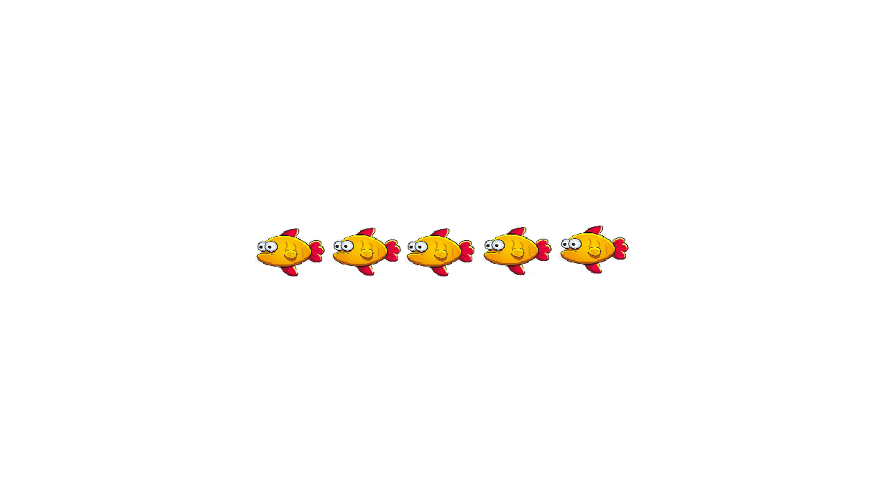
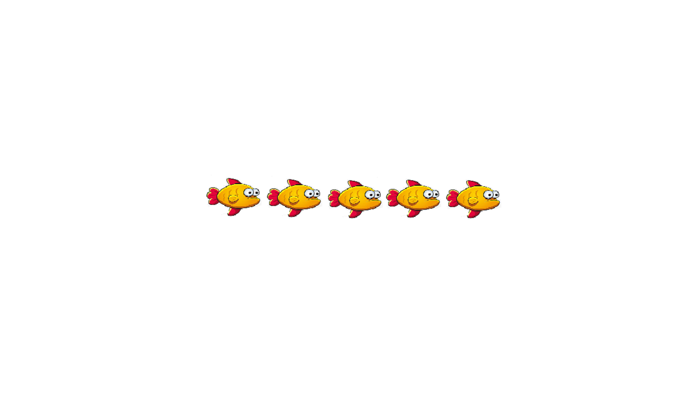
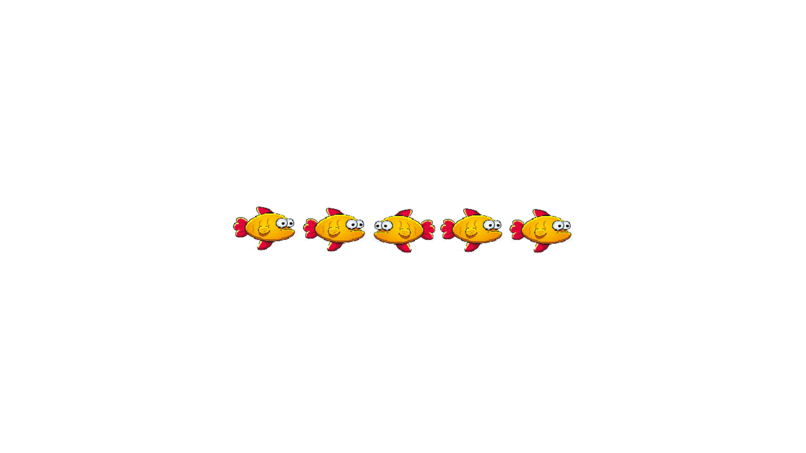
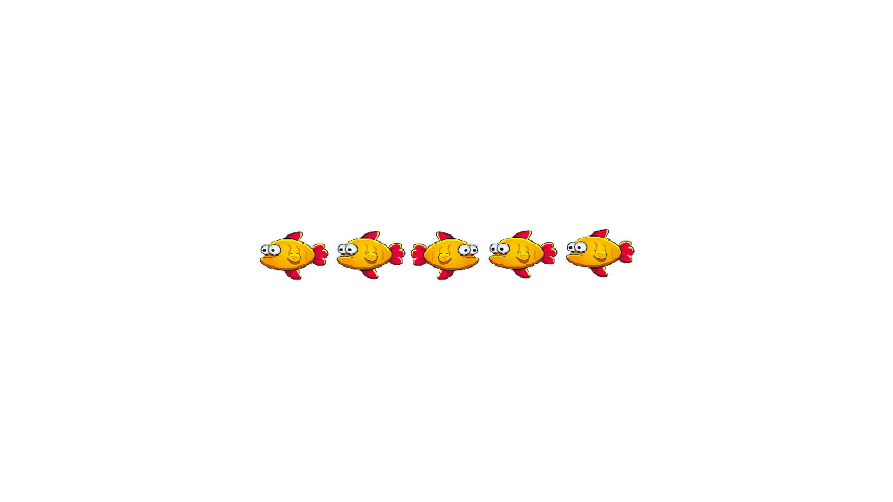

如果中间的小鱼向左，请按左箭头键(A)；如果向右，请按右箭头键(L)。
如果中间的小鱼向左，请按左箭头键(A)；如果向右，请按右箭头键(L)。
如果中间的小鱼向左，请按左箭头键(A)；如果向右，请按右箭头键(L)。
如果中间的小鱼向左，请按左箭头键(A)；如果向右，请按右箭头键(L)。
接下来是练习环节，你将有机会熟悉实验流程。
请记住：关注中间的小鱼，判断它的方向。
如果中间的小鱼向左，请按A键或点击左箭头；如果向右，请按L键或点击右箭头。
你需要完成至少6次正确反应才能进入正式实验。
练习环节已完成，接下来进入正式实验。
请继续关注中间的小鱼，判断它的方向。
正式实验中将不再提供反馈。
请尽量快速准确地做出反应。